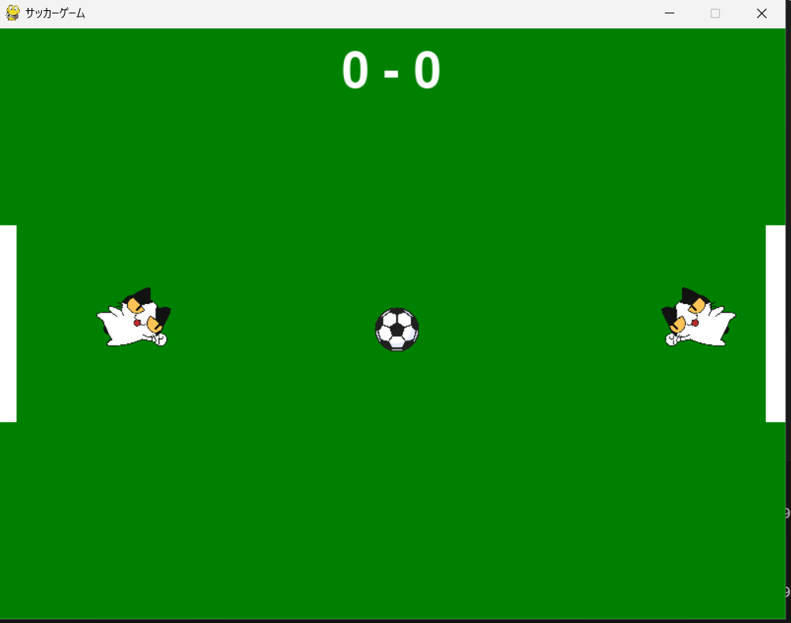
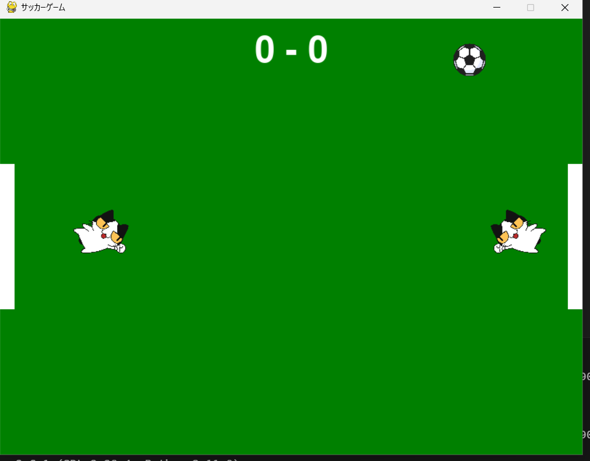
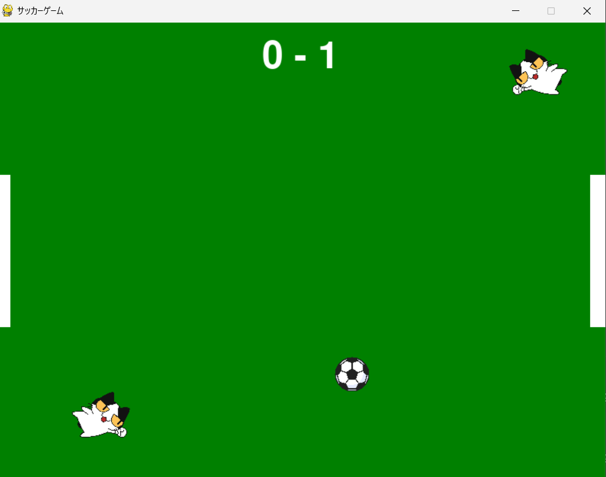
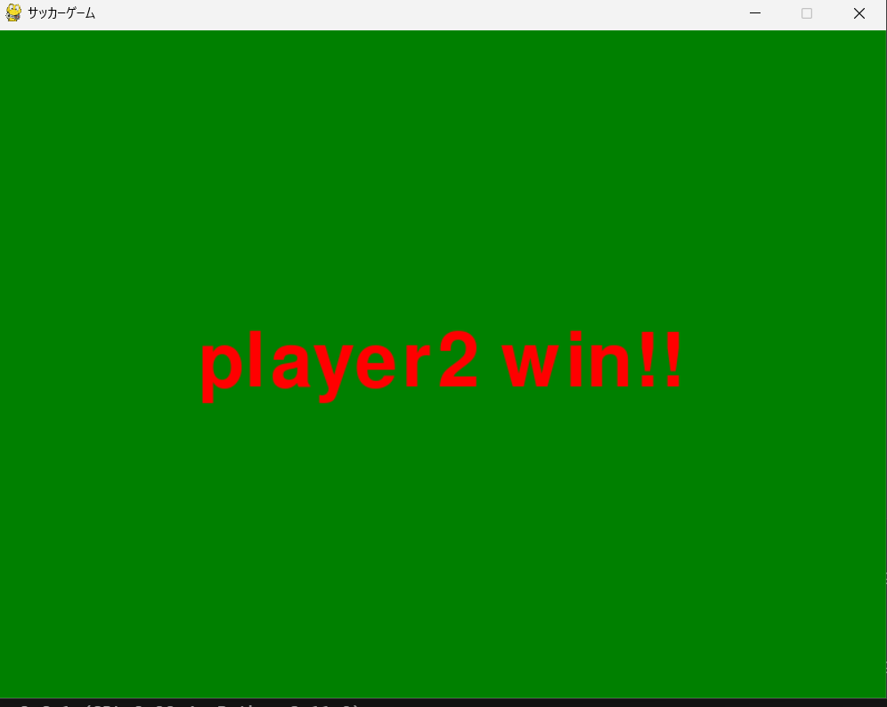

Teruki Toyao
大阪公立大学工業高等専門学校 知能情報コース在籍。
Python・Unity・Web技術を軸に、実用的なアプリ開発に取り組むStudent Developer。
U-18サッカー部キャプテンとして、技術とリーダーシップを両立してきました。
プログラミングとサッカーという二つのフィールドで、常に高い目標を掲げて取り組んできました。 コース配属後すぐに知能情報の専門知識を習得し、2・3・4年と連続してクラス総代を務めました。 U-18サッカー部では2024年9月にキャプテンに就任し、チームをまとめる経験を積んでいます。
プログラミングでは実際に動くものを作ることにこだわり、じゃんけんゲームから始まりUnityでのゲーム開発、 Next.jsを使ったフルスタックWebアプリまで幅広く経験してきました。
中学校生活を終え、高専へ進学
サッカー部に入部。技術と体力の両立を目指す
専門的なプログラミング学習スタート。クラス総代に選出
チームリーダーとしてチームを牽引
Next.js・Prismaなど最新技術を学びながら開発継続中
2024年高専祭で発表したUnityベースの2人対戦型サッカーゲーム。 猫キャラクターを操作し、リアルタイムで対戦できます。ボールの物理演算・スコアシステム・ 勝敗判定を実装し、Gitを使ったバージョン管理も行いました。
GitHub で見る →



Next.js 15 App Router + Prisma + Supabase (PostgreSQL) によるフルスタックブログ。 React Server Components・リアルタイム検索・動的OGP画像生成・Framer Motionアニメーションを実装。
GitHub で見る →コールバック・Promise・async/awaitを図解付きで解説するWebサイト。 自身の学習内容をアウトプットすることを目的に制作しました。
GitHub で見る →インターンシップ・就職に関するお声がけ、お気軽にご連絡ください。